inthemix Audio Interviews
179 pieces from the deep archive.
Mark James [Audio]: Looking to the Future
7 December 2007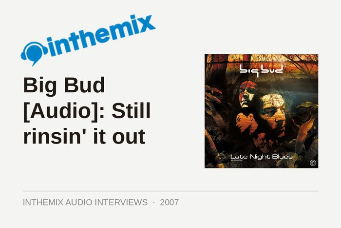
Big Bud [Audio]: Still rinsin' it out
6 December 2007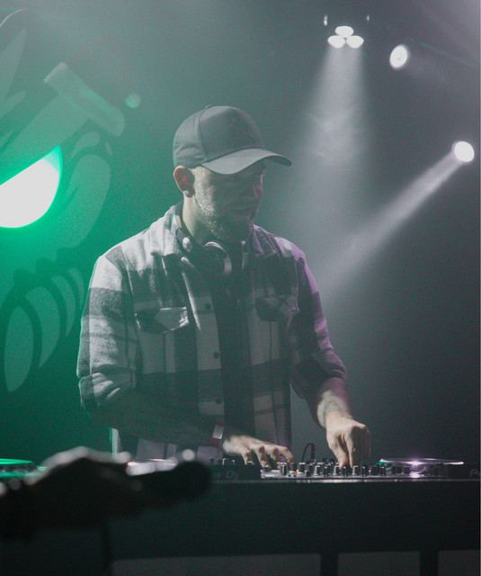
Bexta [Audio]: She's digging the tech trance
6 December 2007Martijn ten Velden [Audio]: We wish he would
5 December 2007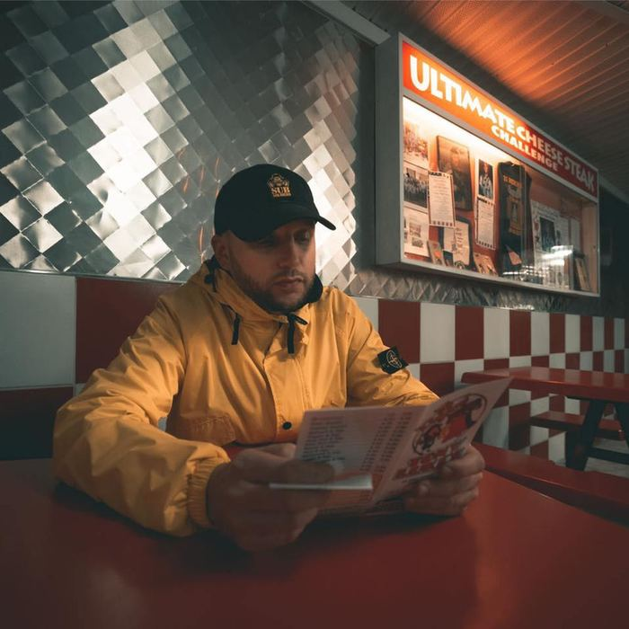
Caspa [Audio]: The dawn of dubstep
5 December 2007
Paul van Dyk [Audio]: The politics of PVD
4 December 2007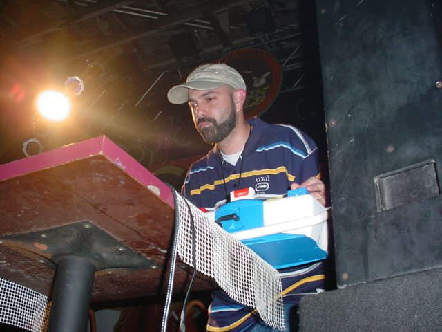
DJ Nu-Mark [Audio]: Beyond the Jurassic age
3 December 2007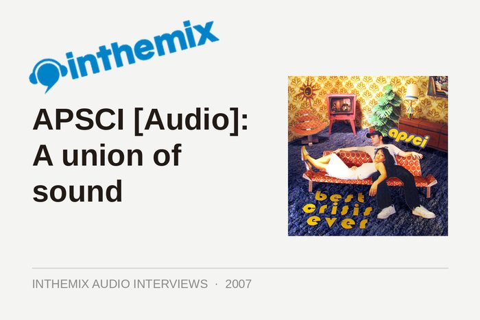
APSCI [Audio]: A union of sound
30 November 2007Stacey Pullen [Audio]: Bracing for the third wave
26 November 2007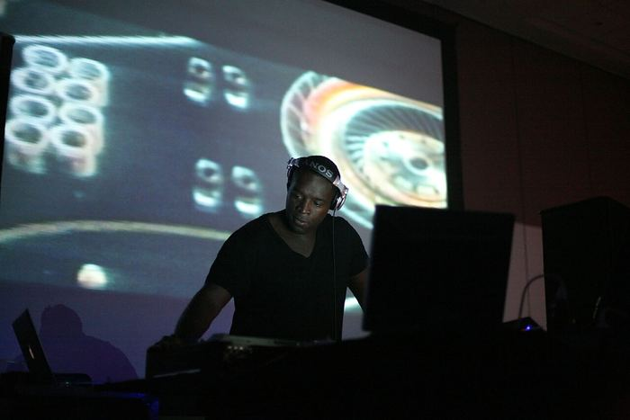
Kevin Saunderson [Audio]: Still traveling strong
26 November 2007T-Rek [Audio]: Man of many hats
5 November 2007Bob Sinclar [Audio]: Going back to the club
1 November 2007Larry Tee [Audio]: Electro spokesperson
31 October 2007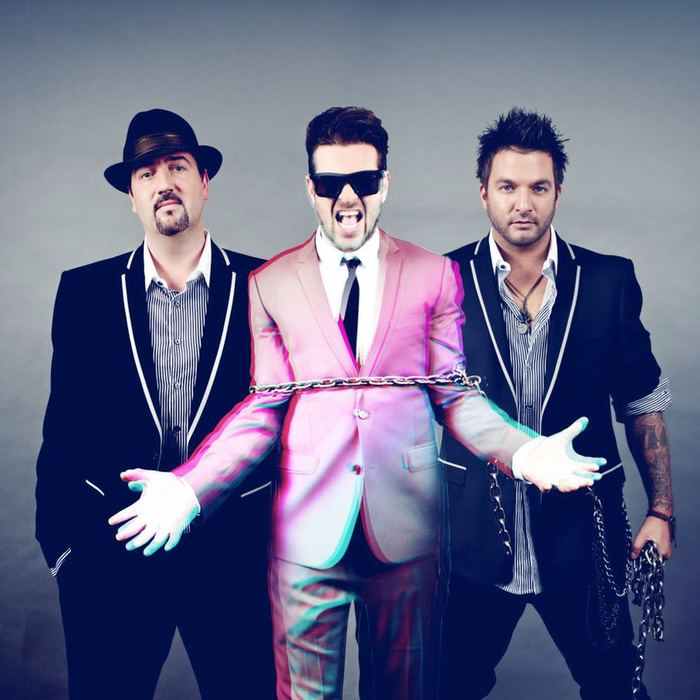
The Potbelleez [Audio]: You can't hold them back
29 October 2007Junkie XL [Audio]: Addicted to the studio
26 October 2007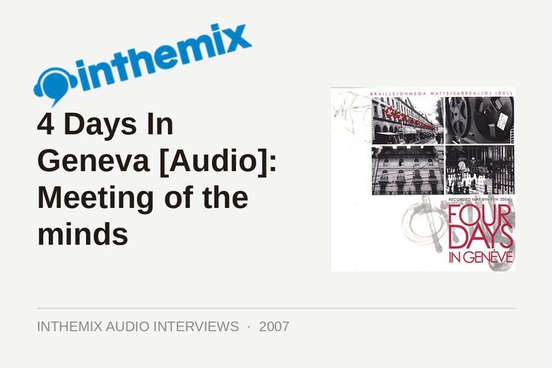
4 Days In Geneva [Audio]: Meeting of the minds
23 October 2007
Jimmy Van M [Audio]: When too much Jimmy is barely enough
17 October 2007Paul Van Dyk [Audio]: The world's DJ
10 October 2007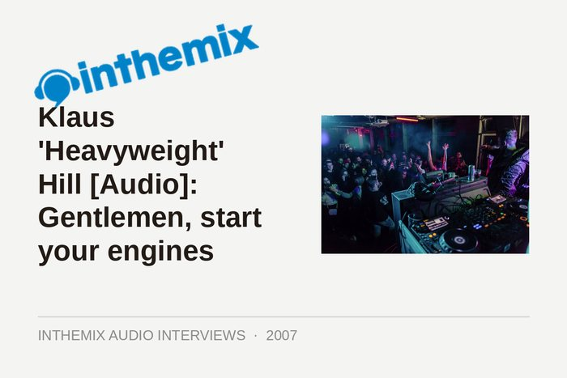
Klaus 'Heavyweight' Hill [Audio]: Gentlemen, start your engines
9 October 2007
Justin Martin [Audio]: Organised chaos
3 October 2007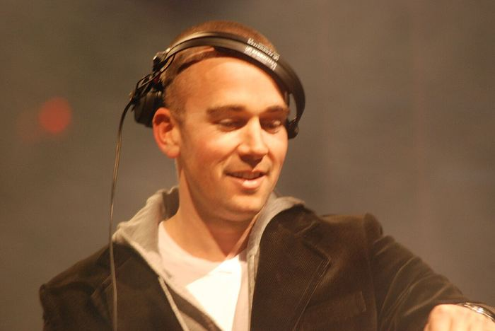
Grant Smillie [Audio]: Miles of Smiles
3 October 2007Aquasky [Audio]: Showing down under it's 'This Way Up'
3 October 2007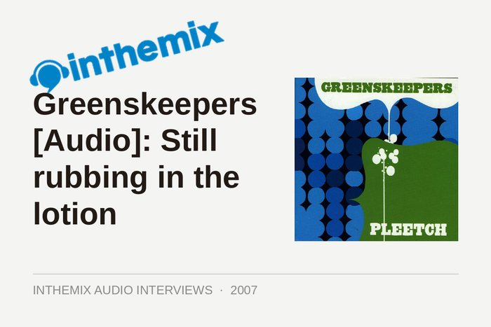
Greenskeepers [Audio]: Still rubbing in the lotion
18 September 2007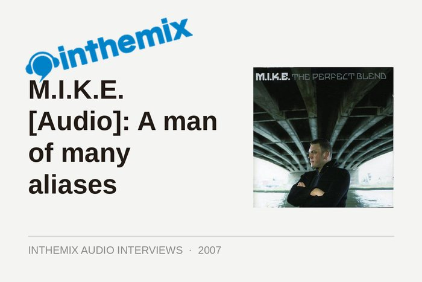
M.I.K.E. [Audio]: A man of many aliases
17 September 2007Freq Nasty [Audio]: Frequently blurring genres
13 September 2007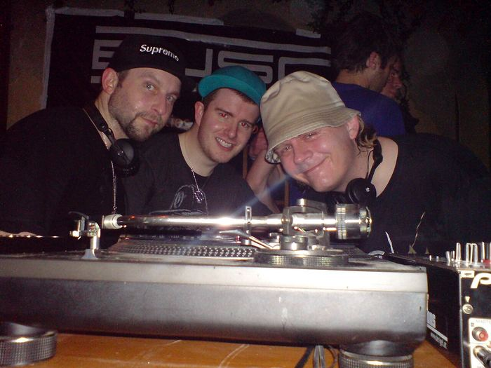
Scratch Perverts [Audio]: Turntablists with taste
11 September 2007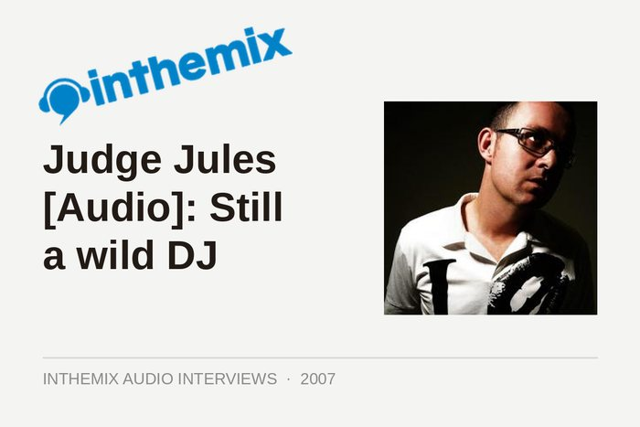
Judge Jules [Audio]: Still a wild DJ
29 August 2007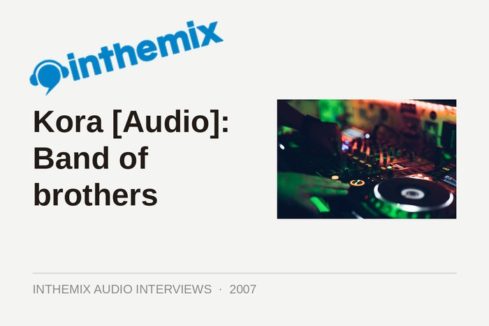
Kora [Audio]: Band of brothers
27 August 2007
Sander Kleinenberg [Audio]: Back to the house underground
22 August 2007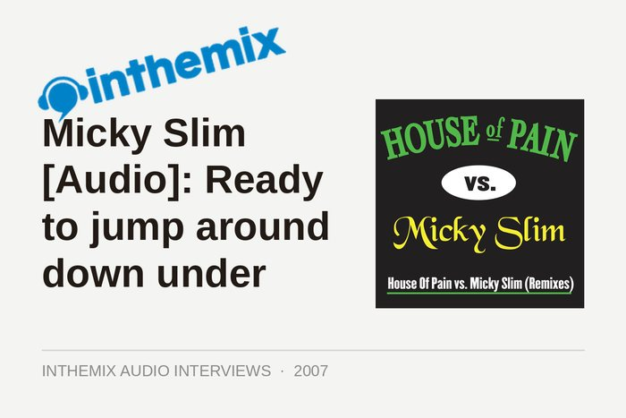
Micky Slim [Audio]: Ready to jump around down under
20 August 2007Tommy Trash [Audio]: It's all about electro
3 August 2007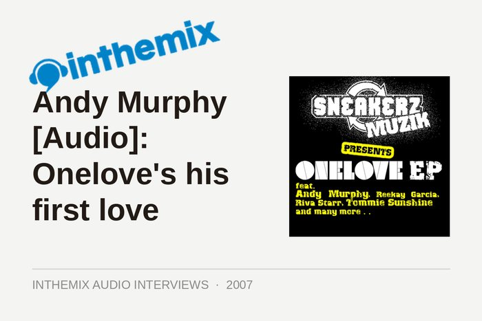
Andy Murphy [Audio]: Onelove's his first love
31 July 2007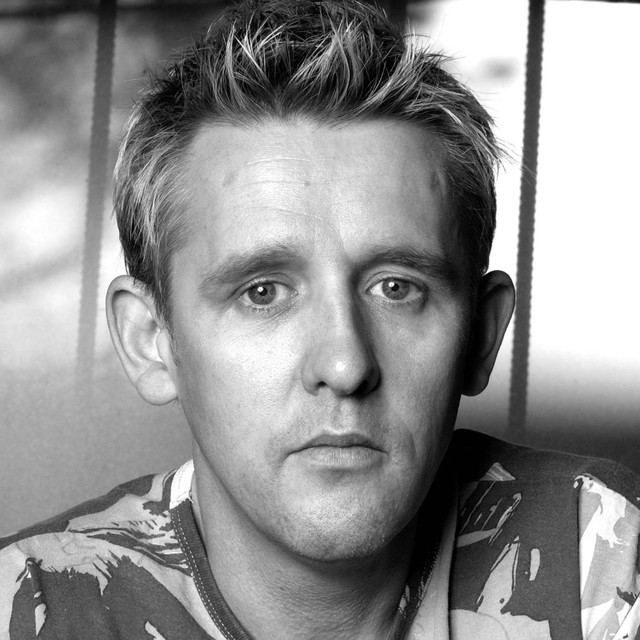
Peewee Ferris [Audio]: Having the Peaktime of his life
23 July 2007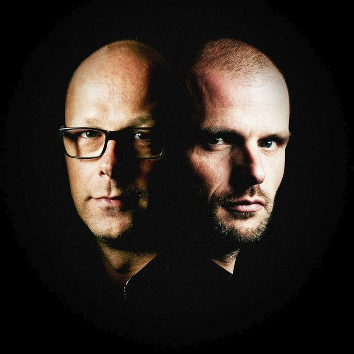
Rank 1 [Audio]: Their name came true
18 July 2007
Anthony Pappa [Audio]: Top quality export
17 July 2007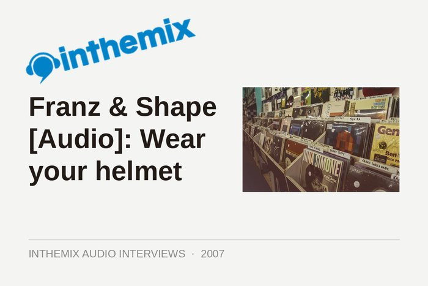
Franz & Shape [Audio]: Wear your helmet
4 July 2007Sola Rosa [Audio]: Moving on through Australia
3 July 2007Paolo Mojo [Audio]: Renaissance's digital man
3 July 2007
Adam Freeland [Audio]: Breaking away from the mould
12 June 2007
Hernan Cattaneo [Audio]: Sequenced to perfection
6 June 2007D Ramirez [Audio]: Meet him at the Discotek
30 May 2007Sharam Jey [Audio]: King Kong's 5 year reign
29 May 2007
Ben Watt [Audio]: Buzzin back to Australia
29 May 2007John Course [Audio]: Hardest working man in the biz
16 May 2007
Armin Van Buuren [Audio]: All white, all night
9 May 2007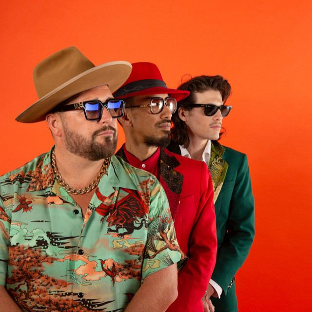
The Cuban Brothers [Audio]: James Brown's favourite breakdancing Latinos
23 April 2007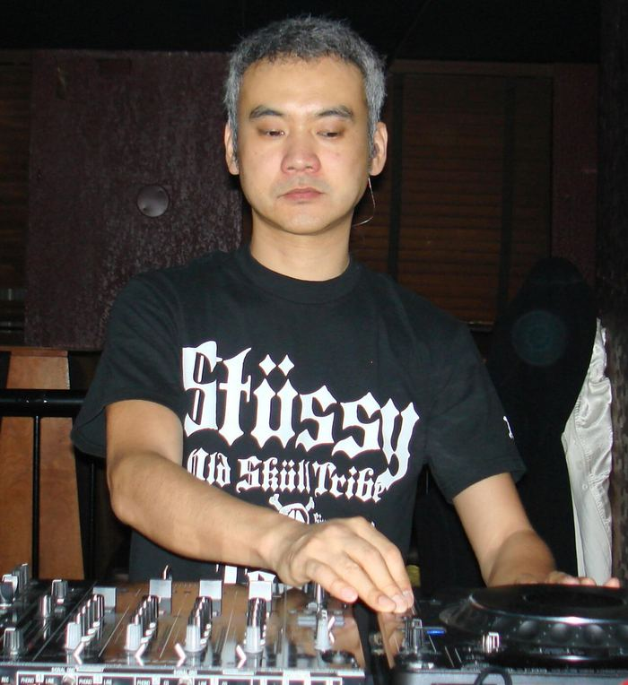
Satoshi Tomiie [Audio]: DJ master
18 April 2007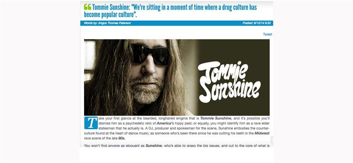
Tommie Sunshine [Audio]: Remix your heart out
16 April 2007Mark Dynamix [Audio]: Pushing the Production
14 March 2007
Dirty South [Audio]: His disco is eating him
14 March 2007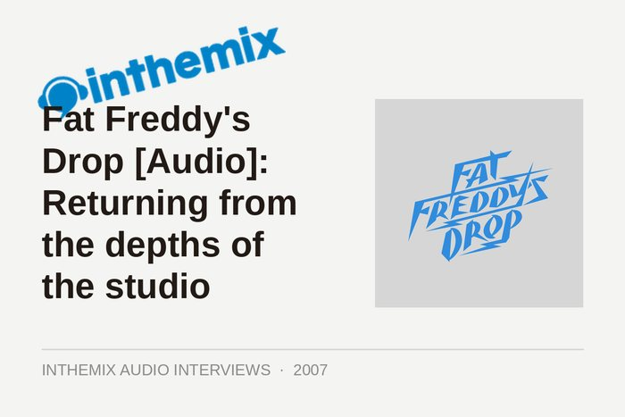
Fat Freddy's Drop [Audio]: Returning from the depths of the studio
7 March 2007Joachim Garraud [Audio]: Prepare for the space invader
6 March 2007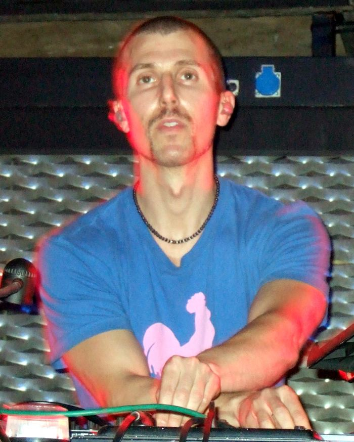
Josh Wink [Audio]: Original minimal
5 March 2007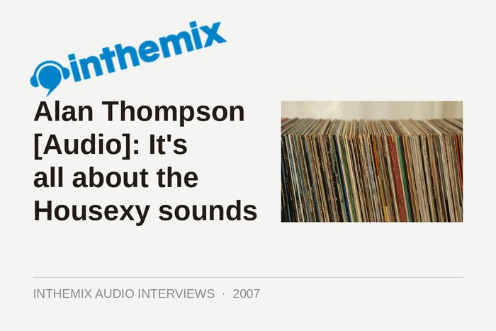
Alan Thompson [Audio]: It's all about the Housexy sounds
1 March 2007
Nick Warren [Audio]: Nowhere near finished just yet
26 February 2007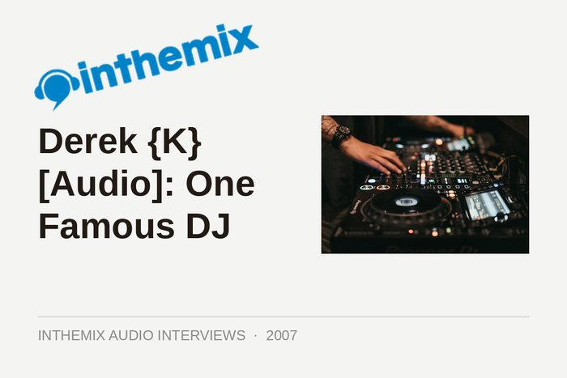
Derek {K} [Audio]: One Famous DJ
12 February 2007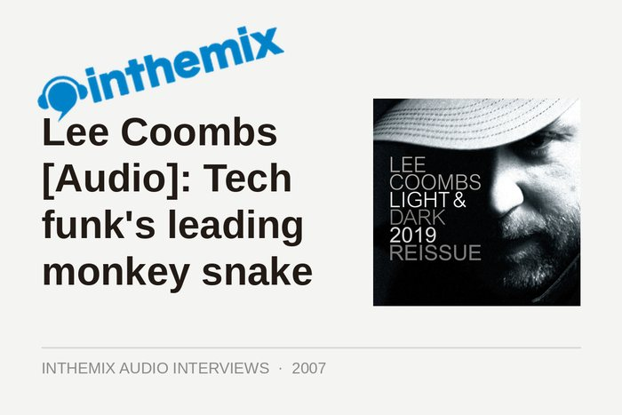
Lee Coombs [Audio]: Tech funk's leading monkey snake
5 February 2007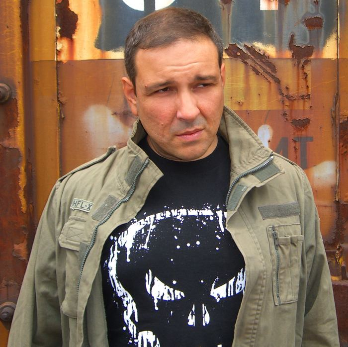
Phil K [Audio]: Australian explorer
24 January 2007
Kid Kenobi [Audio]: Breaking away from breakbeat
24 January 2007